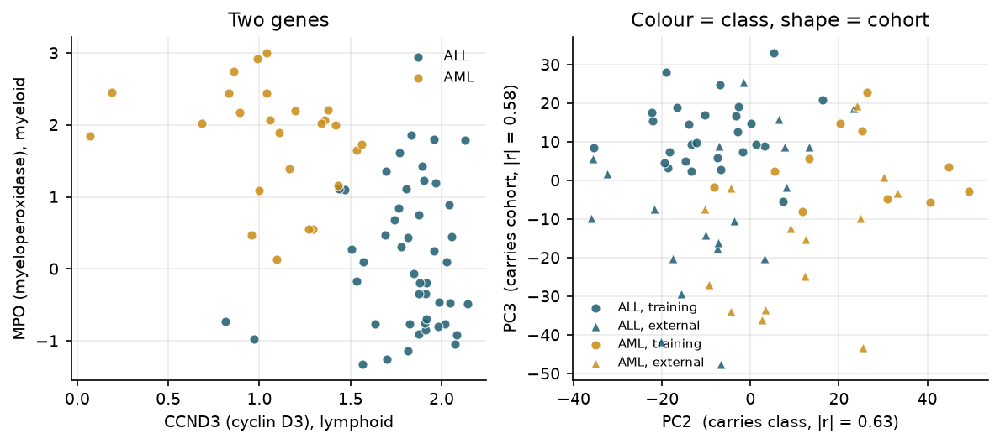
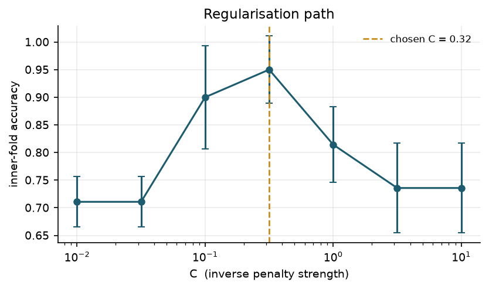
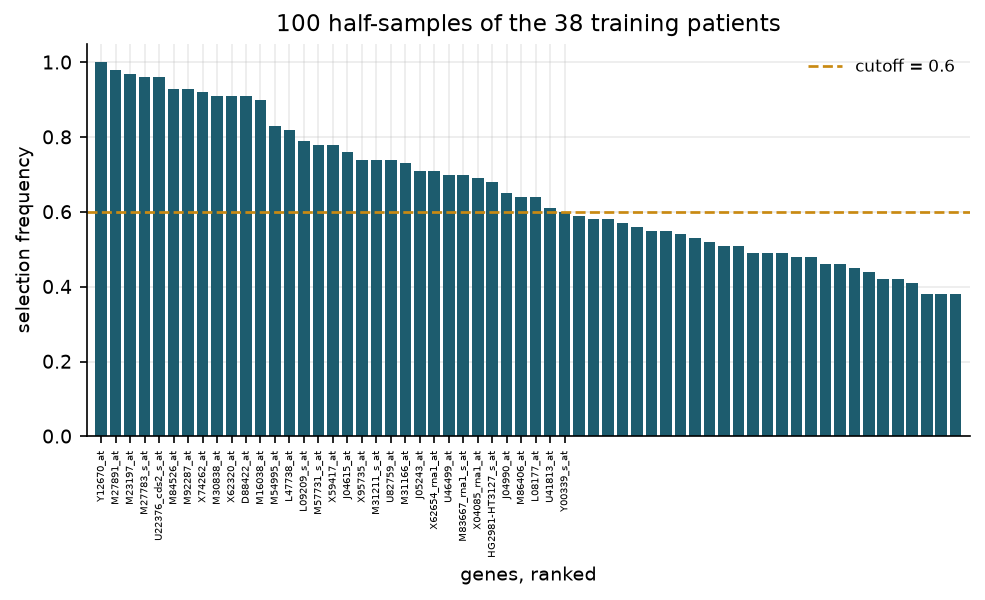

flowchart TD S["Bone marrow stem cell"] --> L["Lymphoid line<br/>B-cells, T-cells"] S --> M["Myeloid line<br/>red cells, platelets, granulocytes"] L -->|glitch| ALL["<b>ALL</b><br/>lymphoblasts"] M -->|glitch| AML["<b>AML</b><br/>myeloblasts"]

1 Biological signature
A biological signature is a fixed gene list with weights and a decision threshold, fit to answer a specific classification question. Every reported performance number is conditional on the data having selected those genes.
This post runs Golub et al. (1999) ALL/AML microarray data end to end: recover the original train/test split, fit an elastic-net signature without leakage, and report honest external validation. The pipeline is described twice — ML vocabulary and statistical vocabulary.
Primer without code: What is a Biological Signature?.
2 Biology background
Acute lymphoblastic leukemia (ALL) and acute myeloid leukemia (AML) require opposite treatments. Pre-1999 diagnosis used morphology, cytochemistry, and surface markers.
Bone marrow stem cell gives two lines:
- ALL: lymphoid line jammed; commonest childhood cancer.
- AML: myeloid line jammed; adult disease; affects oxygen transport and clotting faster.
Diagnostic question: which line is stuck?
3 Data provenance
Source: Golub et al. (1999), Whitehead Institute / Dana-Farber. 72 acute leukemia patients; Affymetrix HU6800 array (7,129 gene probes). Archived hospital samples; goal was to show tumour type is legible in gene expression.
- Matrix used here: Efron and Hastie’s CASI data page (
leukemia_big.csv.gz), cached indata/. - Split key: original Whitehead files (
golub_train.csv.gz,golub_independent.csv.gz) carry probe accessions and patient IDs the CASI copy dropped. - Objective: classify ALL vs AML from expression.
- Downstream impact: treatment assignment (vincristine/steroids vs cytarabine/anthracycline). Target metric: performance at a different hospital, not peak training accuracy.
Imports, plot style, and loading the cached matrices
import warnings
import numpy as np
import pandas as pd
import matplotlib.pyplot as plt
from scipy.stats import beta
warnings.filterwarnings("ignore")
rng_seed = 0
plt.rcParams.update({
"figure.dpi": 150, "savefig.bbox": "tight", "font.size": 9,
"axes.spines.top": False, "axes.spines.right": False,
"axes.grid": True, "grid.alpha": 0.25, "axes.axisbelow": True,
})
ALL_C, AML_C = "#1D5C6E", "#C98A12"
# The CASI matrix: 7,128 genes x 72 samples, column names carry the labels.
casi = pd.read_csv("data/leukemia_big.csv.gz")
X = casi.to_numpy().T # samples x genes
y = np.array([int(c.split(".")[0].startswith("AML")) for c in casi.columns])
# The original Whitehead files, used only as a key: they carry the Affymetrix
# probe accessions and the per-patient sample IDs that the CASI copy dropped.
def read_golub(path):
d = pd.read_csv(path)
ids = [c for c in d.columns[2:] if not c.startswith("call")]
return d["Gene Accession Number"].to_numpy(), d["Gene Description"].to_numpy(), \
d[ids].to_numpy(dtype=float), ids
acc, desc, G_train, id_train = read_golub("data/golub_train.csv.gz")
_, _, G_test, id_test = read_golub("data/golub_independent.csv.gz")
truth = pd.read_csv("data/golub_labels.csv").set_index("patient")["cancer"].to_dict()
print(f"expression matrix : {X.shape[0]} samples x {X.shape[1]} genes")
print(f"class balance : {(y==0).sum()} ALL, {y.sum()} AML")expression matrix : 72 samples x 7128 genes
class balance : 47 ALL, 25 AML72 samples × 7,128 genes (\(p \gg n\)).
A corner of the matrix
pd.DataFrame(
X[:5, :6].round(3),
index=[f"sample {i} ({'AML' if y[i] else 'ALL'})" for i in range(5)],
columns=[f"gene {j}" for j in range(6)],
)| gene 0 | gene 1 | gene 2 | gene 3 | gene 4 | gene 5 | |
|---|---|---|---|---|---|---|
| sample 0 (ALL) | -1.534 | -1.236 | -0.334 | 0.489 | -1.301 | -1.683 |
| sample 1 (ALL) | -0.868 | -1.276 | 0.376 | 0.444 | -1.230 | -1.642 |
| sample 2 (ALL) | -0.433 | -1.184 | -0.459 | 0.436 | -1.326 | -1.407 |
| sample 3 (ALL) | -1.672 | -1.596 | -1.423 | 0.193 | -1.818 | -1.744 |
| sample 4 (ALL) | -1.188 | -1.335 | -0.797 | 0.236 | -1.311 | -1.654 |
Each patient column is z-scored (mean 0, SD 1). Per-gene preprocessing across patients is undocumented (“lost in time”).
4 Train/test split recovery
Golub’s design:
- 38 training: single hospital, bone marrow, predictor built here.
- 34 external test: later collection, different labs, some blood — simulates new hospital.
CASI file lacks patient IDs. Recovery method: column-wise rank order is invariant to affine rescaling → Spearman rank correlation matches CASI columns to Golub patients.
Code
G = np.hstack([G_train, G_test])[:X.shape[1]] # CASI drops Golub's last probe
ids = id_train + id_test
golub_y = np.array([int(truth[int(i)] == "AML") for i in ids])
rank = lambda A: np.argsort(np.argsort(A, axis=0), axis=0).astype(float)
Rc, Rg = rank(casi.to_numpy()), rank(G)
Rc = (Rc - Rc.mean(0)) / Rc.std(0)
Rg = (Rg - Rg.mean(0)) / Rg.std(0)
S = (Rc.T @ Rg) / G.shape[0] # 72 x 72 Spearman matrix
match, best = S.argmax(1), np.sort(S, axis=1)
print(f"unique matches : {len(set(match.tolist()))}/72")
print(f"labels agree : {(golub_y[match] == y).sum()}/72")
print(f"worst true match : {best[:, -1].min():.3f}")
print(f"best runner-up : {best[:, -2].max():.3f}")
print(f"CASI column 0 -> patient {ids[match[0]]}; column 34 -> patient {ids[match[34]]}")unique matches : 72/72
labels agree : 72/72
worst true match : 0.945
best runner-up : 0.884
CASI column 0 -> patient 39; column 34 -> patient 1- 72/72 unique matches; all labels agree.
- Worst true match: 0.945; best wrong candidate: 0.884.
- CASI stores 34 external samples first (columns 0–33), training second (34–71).
4.1 Preprocessing caveat
Undocumented per-gene step may have pooled all 72 patients. Column z-scoring is safe; pooled gene normalization would leak test into training. All results below are conditional on column scaling only.
Figure 1
test_ix, train_ix = np.arange(34), np.arange(34, 72)
probe = {a: i for i, a in enumerate(acc[:X.shape[1]])}
mpo, ccnd3 = probe["M19507_at"], probe["M92287_at"]
Z = (X - X.mean(0)) / (X.std(0) + 1e-9)
U, sv, _ = np.linalg.svd(Z - Z.mean(0), full_matrices=False)
pcs = U[:, :5] * sv[:5]
# Pick the axes by what they actually carry, rather than assuming PC1/PC2:
# correlate each component with class and with cohort membership.
cohort = np.r_[np.zeros(34), np.ones(38)]
corr = lambda v: np.array([abs(np.corrcoef(v, pcs[:, k])[0, 1]) for k in range(5)])
k_cls, k_coh = corr(y).argmax(), corr(cohort).argmax()
fig, (a1, a2) = plt.subplots(1, 2, figsize=(8, 3.6))
for cls, name, col in [(0, "ALL", ALL_C), (1, "AML", AML_C)]:
m = y == cls
a1.scatter(X[m, ccnd3], X[m, mpo], c=col, s=28, alpha=0.85, label=name,
edgecolor="white", linewidth=0.5)
a1.set(xlabel="CCND3 (cyclin D3), lymphoid", ylabel="MPO (myeloperoxidase), myeloid",
title="Two genes")
a1.legend(frameon=False, fontsize=8)
for cls, col in [(0, ALL_C), (1, AML_C)]:
for ix, mark, lab in [(train_ix, "o", "training"), (test_ix, "^", "external")]:
m = np.intersect1d(np.flatnonzero(y == cls), ix)
a2.scatter(pcs[m, k_cls], pcs[m, k_coh], c=col, marker=mark, s=28, alpha=0.85,
edgecolor="white", linewidth=0.5,
label=f"{'AML' if cls else 'ALL'}, {lab}")
a2.set(xlabel=f"PC{k_cls + 1} (carries class, |r| = {corr(y)[k_cls]:.2f})",
ylabel=f"PC{k_coh + 1} (carries cohort, |r| = {corr(cohort)[k_coh]:.2f})",
title="Colour = class, shape = cohort")
a2.legend(frameon=False, fontsize=7, loc="best")
fig.tight_layout()
plt.show()
- CCND3 (lymphoid) vs MPO (myeloid) nearly separate classes alone.
- Class and cohort load on different principal components. Ridge classifier on cohort alone: 78% CV accuracy.
5 ML pipeline
5.1 Input representation
Model sees samples × genes matrix. Biology (probe mapping, normalization) is upstream and assay-specific.
5.2 Supervised signature
Signature requires labels (ALL vs AML). Unsupervised structure ≠ signature without a question. Golub (1999) also did class discovery then prediction; discovery proposes the question, prediction remains supervised.
5.3 Elastic net objective
Shipped artifact: fixed gene list, weights, threshold — locked before opening test set.
\[ \hat\beta \;=\; \arg\min_{\beta}\; -\frac{1}{n}\sum_{i=1}^{n}\Big[y_i\,x_i^{\top}\beta - \log\big(1 + e^{x_i^{\top}\beta}\big)\Big] \;+\; \lambda\Big(\alpha\lVert\beta\rVert_1 + \tfrac{1-\alpha}{2}\lVert\beta\rVert_2^2\Big) \]
- L1 (\(\lVert\beta\rVert_1\)): sparsity; exact zeros.
- L2 (\(\lVert\beta\rVert_2^2\)): groups correlated genes.
- \(\alpha = 0.5\); tune \(\lambda\) (via \(C = 1/\lambda\)) by nested cross-validation on 38 training samples only.
Nested cross-validation, and Figure 2
from sklearn.linear_model import LogisticRegression
from sklearn.model_selection import StratifiedKFold, cross_val_score
from sklearn.metrics import accuracy_score, roc_auc_score, brier_score_loss
Xtr, ytr, Xte, yte = X[train_ix], y[train_ix], X[test_ix], y[test_ix]
Cs = np.logspace(-2, 1, 7)
def enet(C):
return LogisticRegression(penalty="elasticnet", solver="saga", l1_ratio=0.5,
C=C, max_iter=3000, tol=1e-3, random_state=rng_seed)
def screen(A, k=2000):
"""Unsupervised variance screen. Never sees y, so it is safe inside a fold."""
return np.argsort(-A.var(0))[:k]
outer, scores = StratifiedKFold(5, shuffle=True, random_state=0), []
for a, b in outer.split(Xtr, ytr):
g = screen(Xtr[a])
mu, sd = Xtr[a][:, g].mean(0), Xtr[a][:, g].std(0) + 1e-9
Za, Zb = (Xtr[a][:, g] - mu) / sd, (Xtr[b][:, g] - mu) / sd
inner = StratifiedKFold(4, shuffle=True, random_state=1)
C = max(Cs, key=lambda c: cross_val_score(enet(c), Za, ytr[a], cv=inner).mean())
scores.append(accuracy_score(ytr[b], enet(C).fit(Za, ytr[a]).predict(Zb)))
# Full-training-set path, for the figure and for the final penalty.
g = screen(Xtr)
mu, sd = Xtr[:, g].mean(0), Xtr[:, g].std(0) + 1e-9
Ztr, Zte = (Xtr[:, g] - mu) / sd, (Xte[:, g] - mu) / sd
cv5 = StratifiedKFold(5, shuffle=True, random_state=1)
path = np.array([cross_val_score(enet(c), Ztr, ytr, cv=cv5) for c in Cs])
C_star = Cs[path.mean(1).argmax()]
print(f"nested CV accuracy : {np.mean(scores):.3f} (outer folds "
f"{[round(s, 2) for s in scores]})")
fig, ax = plt.subplots(figsize=(6.2, 3.2))
ax.errorbar(Cs, path.mean(1), yerr=path.std(1), marker="o", color=ALL_C,
capsize=3, linewidth=1.5, markersize=5)
ax.axvline(C_star, color=AML_C, linestyle="--", linewidth=1.3,
label=f"chosen C = {C_star:.2f}")
ax.set(xscale="log", xlabel="C (inverse penalty strength)",
ylabel="inner-fold accuracy", title="Regularisation path")
ax.legend(frameon=False, fontsize=8)
plt.show()nested CV accuracy : 0.921 (outer folds [0.75, 1.0, 1.0, 0.86, 1.0])
Nested CV training accuracy: 0.921. External test (once):
Code
final = enet(C_star).fit(Ztr, ytr)
selected = g[np.flatnonzero(final.coef_[0])]
p_test = final.predict_proba(Zte)[:, 1]
print(f"genes with non-zero coefficient : {len(selected)}")
print(f"external accuracy : {accuracy_score(yte, p_test > 0.5):.3f} "
f"({int((( p_test > 0.5) == yte).sum())}/34)")
print(f"external AUC : {roc_auc_score(yte, p_test):.3f}")
print(f"external Brier : {brier_score_loss(yte, p_test):.3f}")
wrong = np.flatnonzero((p_test > 0.5).astype(int) != yte)
print(f"the one error : predicted p(AML) = {p_test[wrong][0]:.3f}")genes with non-zero coefficient : 88
external accuracy : 0.971 (33/34)
external AUC : 1.000
external Brier : 0.041
the one error : predicted p(AML) = 0.468Results:
- 33/34 correct; AUC 1.000 (perfect ranking); one error at \(p = 0.468\).
- Training CV (0.921) understated external performance (0.971).
Naming the selected genes
lineage = {
"M19507_at": "MPO, myeloperoxidase — the granulocyte enzyme",
"M23197_at": "CD33 — myeloid surface antigen",
"X52056_at": "SPI1 / PU.1 — myeloid master transcription factor",
"M84526_at": "DF, adipsin — Golub's AML-high list",
"M27891_at": "CST3, cystatin C — Golub's AML-high list",
"M92287_at": "CCND3, cyclin D3 — Golub's ALL-high list",
"U05259_rna1_at": "MB-1 / CD79a — B-cell receptor component",
"M31523_at": "TCF3 / E2A — required for B-cell development",
}
hits = [(acc[i], lineage[acc[i]]) for i in selected if acc[i] in lineage]
for a, note in hits:
print(f" {a:16s} {note}")
print(f"\n{len(hits)} of these annotated markers survived selection.") M27891_at CST3, cystatin C — Golub's AML-high list
X52056_at SPI1 / PU.1 — myeloid master transcription factor
M84526_at DF, adipsin — Golub's AML-high list
M19507_at MPO, myeloperoxidase — the granulocyte enzyme
U05259_rna1_at MB-1 / CD79a — B-cell receptor component
M23197_at CD33 — myeloid surface antigen
M92287_at CCND3, cyclin D3 — Golub's ALL-high list
7 of these annotated markers survived selection.Selected genes: myeloid vs lymphoid markers; includes MPO (pre-1999 stain target).
6 Statistical pipeline
Same procedure; emphasis on inference under \(p \gg n\) and post-selection bias.
6.1 Post-selection inference
Selected gene weights inherit selection luck. Standard CIs assume pre-specified variables. Repairs:
- Split sample: select on one half, infer on other.
- Selective inference: correct for selection.
- Knockoffs: fake genes through same contest.
6.2 False discovery rate
7,128 tests at 5% → ~356 false positives by chance. FDR controls expected fraction wrong among reported genes:
\[ \mathrm{FDR} \;=\; \mathbb{E}\!\left[\frac{V}{\max(R, 1)}\right] \]
Benjamini–Hochberg delivers long-run FDR control when genes correlate; single-list fraction can swing (gene gangs).
6.3 Pipeline stages
- Pre-specify estimand and threshold.
- Split before any transformation.
- Fit scaling and gene filter on training folds only.
- Inner loop: choose penalty; outer loop: score performance.
- Stability selection across subsamples.
- Lock model; test externally once; report intervals and calibration.
Step 3 is most commonly violated.
6.4 Leakage demonstration
Score all genes on full data, keep top 50, then cross-validate → held-out fold influenced gene choice. Ambroise and McLachlan (2002).
Code
def top_genes(A, lab, k=50):
m0, m1 = A[lab == 0].mean(0), A[lab == 1].mean(0)
se = np.sqrt(A[lab == 0].var(0) / (lab == 0).sum()
+ A[lab == 1].var(0) / lab.sum()) + 1e-9
return np.argsort(-np.abs((m1 - m0) / se))[:k]
def two_ways(lab, cv=StratifiedKFold(10, shuffle=True, random_state=7)):
once = cross_val_score(enet(1.0), Z[:, top_genes(Z, lab)], lab, cv=cv).mean()
fold = [accuracy_score(lab[b], enet(1.0)
.fit(Z[a][:, (gi := top_genes(Z[a], lab[a]))], lab[a])
.predict(Z[b][:, gi])) for a, b in cv.split(Z, lab)]
return 1 - once, 1 - np.mean(fold)
opt, honest = two_ways(y)
print(f"real labels : filter once {opt:.1%} error | filter in fold {honest:.1%}")
shuffled = np.random.default_rng(3).permutation(y)
opt_n, honest_n = two_ways(shuffled)
print(f"labels shuffled : filter once {opt_n:.1%} error | filter in fold {honest_n:.1%}")
print(f"chance for this class balance : {(y == 0).mean():.1%} correct by always saying ALL")real labels : filter once 2.9% error | filter in fold 4.3%
labels shuffled : filter once 7.0% error | filter in fold 33.2%
chance for this class balance : 65.3% correct by always saying ALLReal labels: 2.9% (leaked) vs 4.3% (honest) — small gap because signal is strong.
Shuffled labels: 7.0% error (93% accuracy on noise) vs 33.2% (honest) ≈ always-ALL baseline.
6.5 Stability selection
100 half-samples of 38 training patients; fixed penalty; count reselection frequency.
Stability selection, and Figure 3
rng = np.random.default_rng(rng_seed)
freq, B = np.zeros(X.shape[1]), 100
pool = screen(Xtr)
for _ in range(B):
take = rng.choice(len(ytr), len(ytr) // 2, replace=False)
if len(np.unique(ytr[take])) < 2:
continue
A = Xtr[take][:, pool]
A = (A - A.mean(0)) / (A.std(0) + 1e-9)
freq[pool[np.flatnonzero(enet(0.5).fit(A, ytr[take]).coef_[0])]] += 1
freq /= B
order = np.argsort(-freq)
for t in (0.5, 0.6, 0.7, 0.9):
print(f"selection frequency >= {t}: {(freq >= t).sum()} genes")
fig, ax = plt.subplots(figsize=(7.6, 3.4))
top = order[:60]
ax.bar(range(len(top)), freq[top], color=ALL_C, width=0.8)
ax.axhline(0.6, color=AML_C, linestyle="--", linewidth=1.3, label="cutoff = 0.6")
above = int((freq[top] >= 0.6).sum())
ax.set_xticks(range(above))
ax.set_xticklabels([acc[i] for i in top[:above]], rotation=90, fontsize=5)
ax.set(xlim=(-1, len(top)), ylabel="selection frequency",
xlabel="genes, ranked", title=f"{B} half-samples of the 38 training patients")
ax.legend(frameon=False, fontsize=8)
plt.show()selection frequency >= 0.5: 45 genes
selection frequency >= 0.6: 33 genes
selection frequency >= 0.7: 26 genes
selection frequency >= 0.9: 12 genes
45 genes ≥50% frequency; 12 ≥90%. Gene list is one draw, not a fixed biological object.
6.6 Golub-50 comparison
Reconstruct Golub’s 50-gene predictor (\(P(g,c) = (\mu_1 - \mu_0)/(\sigma_1 + \sigma_0)\)); compare raw vs log10-clipped preprocessing.
Reconstructing the 1999 predictor
def snr(A, lab):
d = A[lab == 1].mean(0) - A[lab == 0].mean(0)
return d / (A[lab == 1].std(0, ddof=1) + A[lab == 0].std(0, ddof=1) + 1e-12)
raw = G_train.T
P_raw = snr(raw, golub_y[:38])
P_log = snr(np.log10(np.clip(raw, 100, 16000)), golub_y[:38])
fifty = lambda P: set(np.argsort(-P)[:25]) | set(np.argsort(P)[:25])
g50_raw, g50_log = fifty(P_raw), fifty(P_log)
print(f"Golub-50, raw vs his own log10 preprocessing : {len(g50_raw & g50_log)}/50 shared")
print(f"elastic net set vs Golub-50 (log10) : "
f"{len(set(selected) & g50_log)} of 50 genes in common")
print("top AML-high probes:",
", ".join(acc[i] for i in np.argsort(-P_log)[:4]))Golub-50, raw vs his own log10 preprocessing : 32/50 shared
elastic net set vs Golub-50 (log10) : 26 of 50 genes in common
top AML-high probes: M27891_at, X95735_at, U50136_rna1_at, M23197_atLog preprocessing alone changes 18/50 genes. Elastic net agrees with Golub-50 on 26/50.
7 External validation limits
33/34 external accuracy is real but \(n = 34\).
Intervals, and what happens at a different prevalence
def wilson(k, n, z=1.96):
c = (k / n + z * z / (2 * n)) / (1 + z * z / n)
h = z * np.sqrt(k / n * (1 - k / n) / n + z * z / (4 * n * n)) / (1 + z * z / n)
return c - h, c + h
print(f"external accuracy 33/34 : 95% CI [{wilson(33, 34)[0]:.3f}, {wilson(33, 34)[1]:.3f}]")
print(f"nested CV, 35/38 : 95% CI [{wilson(35, 38)[0]:.3f}, {wilson(35, 38)[1]:.3f}]")
sens, fpr_hi = 13 / 14, beta.ppf(0.975, 1, 20)
print(f"\nspecificity 20/20, but 95% upper bound on the false-positive rate: {fpr_hi:.3f}")
for prev, where in [(0.35, "suspected leukemia at referral"), (0.02, "a broader haematology clinic")]:
ppv = sens * prev / (sens * prev + fpr_hi * (1 - prev))
print(f" prevalence {prev:>5.0%} ({where}): PPV could be as low as {ppv:.2f}")external accuracy 33/34 : 95% CI [0.851, 0.995]
nested CV, 35/38 : 95% CI [0.792, 0.973]
specificity 20/20, but 95% upper bound on the false-positive rate: 0.168
prevalence 35% (suspected leukemia at referral): PPV could be as low as 0.75
prevalence 2% (a broader haematology clinic): PPV could be as low as 0.10- 33/34 → 95% CI [0.851, 0.995] for true accuracy.
- 0/20 false AML calls → consistent with FPR up to ~17%.
- PPV at 35% prevalence (referral): could be as low as ~0.75.
- PPV at 2% prevalence (general clinic): could be as low as ~0.10.
Accuracy is a property of model and population. Signature answers “ALL or AML among patients known to have one of them.”
8 References
Biology and genomics
- Golub, T. R. et al. (1999). Molecular classification of cancer: class discovery and class prediction by gene expression monitoring. Science 286:531–537.
- Alizadeh, A. A. et al. (2000). Distinct types of diffuse large B-cell lymphoma identified by gene expression profiling. Nature 403:503–511.
- van ’t Veer, L. J. et al. (2002). Gene expression profiling predicts clinical outcome of breast cancer. Nature 415:530–536.
- Subramanian, A. et al. (2005). Gene set enrichment analysis: a knowledge-based approach for interpreting genome-wide expression profiles. PNAS 102:15545–15550.
- Leek, J. T. et al. (2010). Tackling the widespread and critical impact of batch effects in high-throughput data. Nature Reviews Genetics 11:733–739.
- Whalen, S. et al. (2022). Navigating the pitfalls of applying machine learning in genomics. Nature Reviews Genetics 23:169–181.
Statistics and machine learning
- Tibshirani, R. (1996). Regression shrinkage and selection via the lasso. JRSS-B 58:267–288.
- Benjamini, Y. & Hochberg, Y. (1995). Controlling the false discovery rate: a practical and powerful approach to multiple testing. JRSS-B 57:289–300.
- Zou, H. & Hastie, T. (2005). Regularization and variable selection via the elastic net. JRSS-B 67:301–320.
- Guyon, I., Weston, J., Barnhill, S. & Vapnik, V. (2002). Gene selection for cancer classification using support vector machines. Machine Learning 46:389–422.
- Dudoit, S., Fridlyand, J. & Speed, T. P. (2002). Comparison of discrimination methods for the classification of tumors using gene expression data. JASA 97:77–87.
- Ambroise, C. & McLachlan, G. J. (2002). Selection bias in gene extraction on the basis of microarray gene-expression data. PNAS 99:6562–6566.
- Meinshausen, N. & Bühlmann, P. (2010). Stability selection. JRSS-B 72:417–473.
- Barber, R. F. & Candès, E. J. (2015). Controlling the false discovery rate via knockoffs. Annals of Statistics 43:2055–2085.
- Candès, E., Fan, Y., Janson, L. & Lv, J. (2018). Panning for gold: ‘model-X’ knockoffs for high-dimensional controlled variable selection. JRSS-B 80:551–577.
- Efron, B. & Hastie, T. (2016). Computer Age Statistical Inference: Algorithms, Evidence, and Data Science. Cambridge University Press.
Data. The expression matrix is leukemia_big.csv from the CASI data page. Probe accessions and sample identifiers come from the original Whitehead files, data_set_ALL_AML_train.csv and data_set_ALL_AML_independent.csv; the URL cited in the 1999 paper is long dead, so this post uses a mirror of them. Both are cached under data/ by src/fetch_data.py.